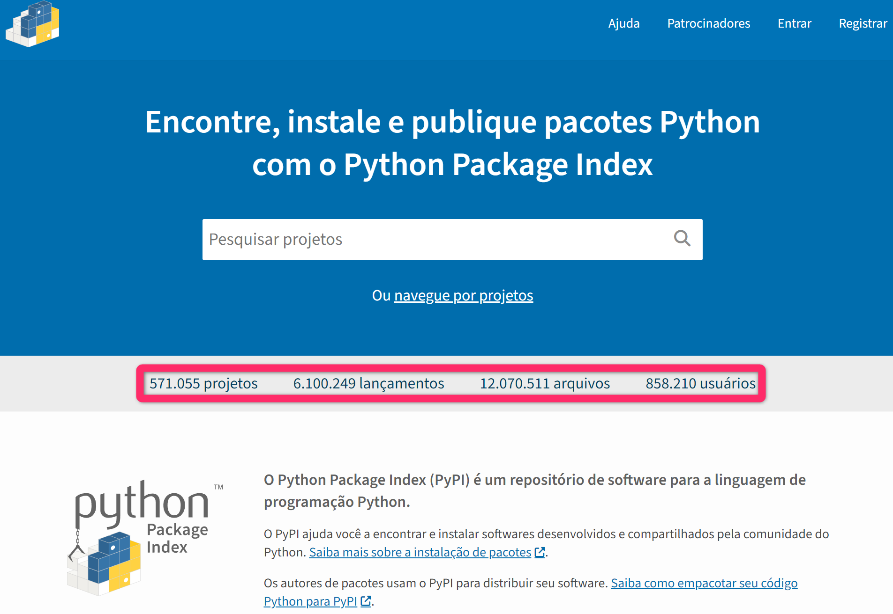

Introdução#
Até o momento trabalhamos em um arquivo único que era executado do começo ao fim. A partir de agora vamos começar a trabalhar com mais arquivos para organizar melhor nosso código e permitir aumentar a complexidade dos programas. Neste capítulo, exploraremos um dos conceitos fundamentais da programação em Python: os módulos.
Definição#
Um módulo em Python é simplesmente um arquivo contendo definições e declarações Python. O nome do arquivo é o nome do módulo com a extensão .py adicionada. Os módulos permitem que você organize seu código de maneira lógica e reutilizável. Até o momento trabalhamos em um arquivo único que era executado do começo ao fim. A partir de agora vamos começar a trabalhar com mais arquivos para organizar melhor nosso código e permitir aumentar a complexidade dos programas.
Porque usar módulos?#
Separar nosso código em módulos (vários arquivos) oferecem várias vantagens:
Organização: ajudam a organizar código relacionado em unidades lógicas.
Reutilização: permitem que você use o mesmo código em diferentes programas.
Escopo: fornecem um local isolado e separado para cada módulo, evitando conflitos de nomes.
Manutenção: facilitam a manutenção de códigos grandes e complexos.
Módulo vs biblioteca#
Conforme avançamos na programação, é comum ouvirmos falar sobre módulos e bibliotecas. Mas qual a diferença entre eles?
Módulo:
É um único arquivo Python
.py.Contém funções, classes e variáveis relacionadas.
É a unidade básica de organização de código em Python.
Um exemplo de módulo é: um arquivo chamado calculadora.py com funções matemáticas.
Biblioteca (pacote):
É uma coleção de módulos (vários arquivos
.py) relacionados.Geralmente maior e mais abrangente que um único módulo.
Pode conter vários arquivos e até subpastas.
Exemplo:
numpyé uma biblioteca para computação numérica que contém muitos módulos.
Uma analogia útil é pensar em um módulo como um capítulo de um livro e uma biblioteca como o livro inteiro ou até mesmo uma série de livros sobre um tema.
Muita das vezes pacote e biblioteca são usados como sinônimos e podem ser entendidos como sendo a mesma coisa.
Resumindo: um módulo é uma unidade única de código, enquanto uma biblioteca (pacote) é uma coleção maior de módulos relacionados.
Tipos de módulos#
Existe basicamente 3 tipos de módulos em Python:
Módulos nativos (built-in): são como caixas de ferramentas que já vêm com o Python quando você o instala. Elas contêm funções e recursos prontos para usar, sem precisar baixar nada extra.
Módulos próprios: São arquivos Python que você mesmo cria. Neles, você coloca suas próprias funções e códigos para usar em diferentes partes do seu programa, ajudando a organizar melhor o que você escreve.
Módulos (bibliotecas ou pacotes) de terceiros: são extras criados por outras pessoas. Você pode baixá-los e instalá-los para adicionar novas funcionalidades ao Python, como se fossem aplicativos que você instala no seu celular para fazer coisas novas.
Ao longo deste capítulo, vamos explorar cada um desses tipos de módulos e aprender o básico sobre como usá-los.
Nota (magnitude do ecossistema Python)
O ecossistema Python é enorme e dinâmico, com centenas de módulos nativos e milhares de bibliotecas de terceiros. Para ilustrar a extensão do que eu disse:
Módulos nativos (built-in):
Há centenas deles, cada um com múltiplas funções e classes.
A cada versão do Python surgem novos módulos e funções e outros deixam de existir
Você pode explorar a lista completa na documentação oficial do Python.
Bibliotecas de terceiros:
O número de projetos é ainda maior, ultrapassando meio milhão.
Algumas bibliotecas são tão complexas que podem levar semanas ou até anos para serem dominadas.
Existem empresas como Google, Facebook, Amazon, Microsoft e outras que desenvolvem bibliotecas de código aberto para a comunidade Python.
Para ver o número atualizado de bibliotecas, visite o Python Package Index (PyPI).
A imagem abaixo imagem mostra o PyPI em 23/09/2024, ilustrando a vasta quantidade de bibliotecas disponíveis. Dada esta magnitude, entendam que a ideia não é entrar em detalhes de cada um individualmente, até porque tal tarefa seria impossível.
{kind=link}
Na próxima seção, vamos começar explorando o básico de módulos, começando pelos módulos nativos. Te vejo lá!